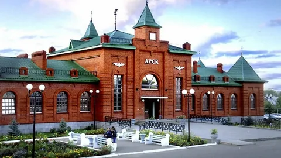
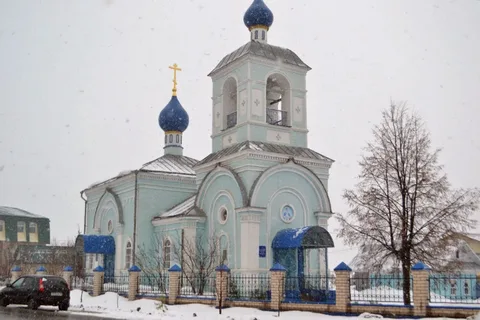

Арский район (тат. Арча районы) – административная единица на северо-востоке Республики Татарстан. Административный центр – город Арск. Район граничит с Балтасинским, Кукморским, Тюлячинским, Сабинским, Атнинским и Высокогорским районами Татарстана, а также с Кировской областью.
Площадь района составляет 1843,6 км². Население – около 52 тысяч человек. Район образован в 1930 году. Арск был основан в XIII веке как укрепленный пункт на восточных границах Булгарского государства. В XVIII веке здесь проходил Сибирский тракт.
Арский район известен как родина великого татарского поэта Габдуллы Тукая, который родился в деревне Кушлавыч. Здесь расположен литературно-мемориальный музей поэта. Также в районе находятся Арский историко-этнографический музей, мечеть "Нур", Свято-Покровская церковь XIX века и другие достопримечательности.
Среди известных уроженцев района – Габдулла Тукай, Садри Максуди, Фатих Амирхан, Хади Атласи. Основу экономики составляют сельское хозяйство, пищевая промышленность и туризм. Расстояние до Казани – 65 км.